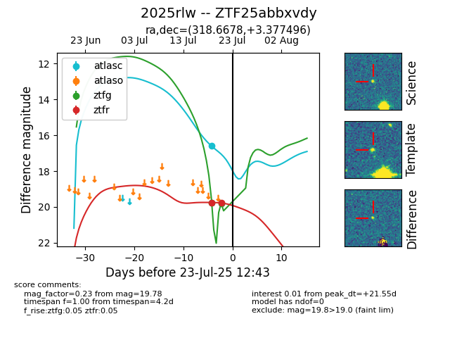

Target ZTF25abbxvdy at 2025-07-23 12:43, see:
FINK: fink-portal.org/ZTF25abbxvdy
Lasair: lasair-ztf.lsst.ac.uk/objects/ZTF25abbxvdy
ALeRCE: alerce.online/object/ZTF25abbxvdy
TNS: wis-tns.org/object/2025rlw
YSE: ziggy.ucolick.org/yse/transient_detail/2025rlw
alt names
ZTF25abbxvdy (ztf,fink)
2025rlw (tns,yse)
coordinates:
equatorial (ra, dec) = (318.6678,+3.37750)
galactic (l, b) = (54.4231,-29.53410)
photometry
last atlasc=16.59, ztfg=19.81, ztfr=19.78
1 atlasc, 2 ztfg, 2 ztfr detections
